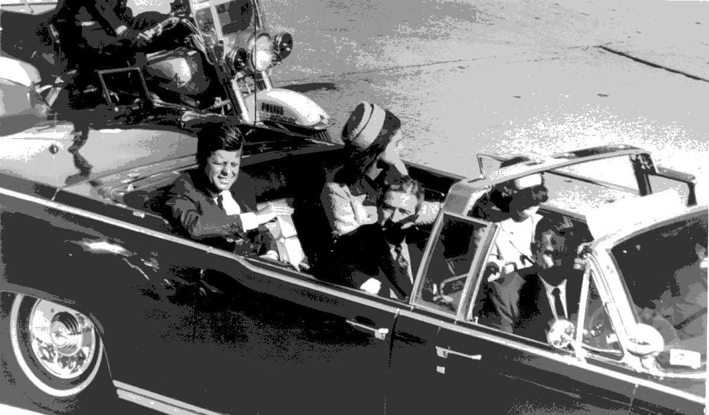
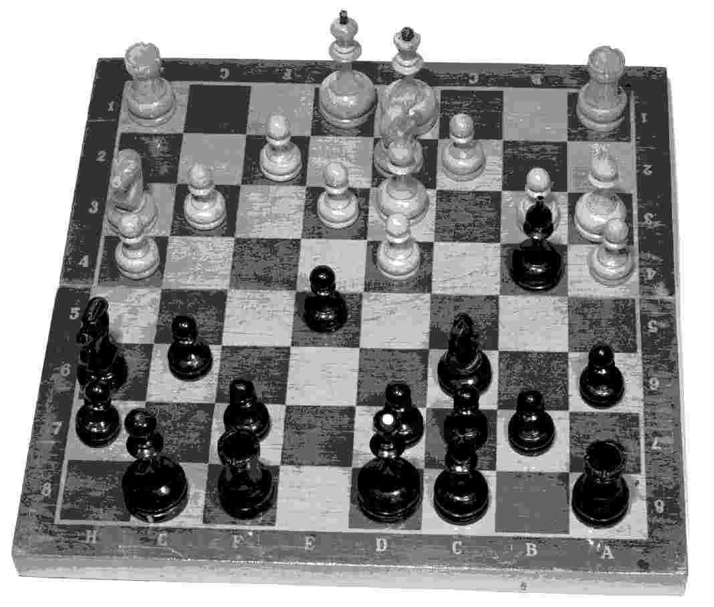
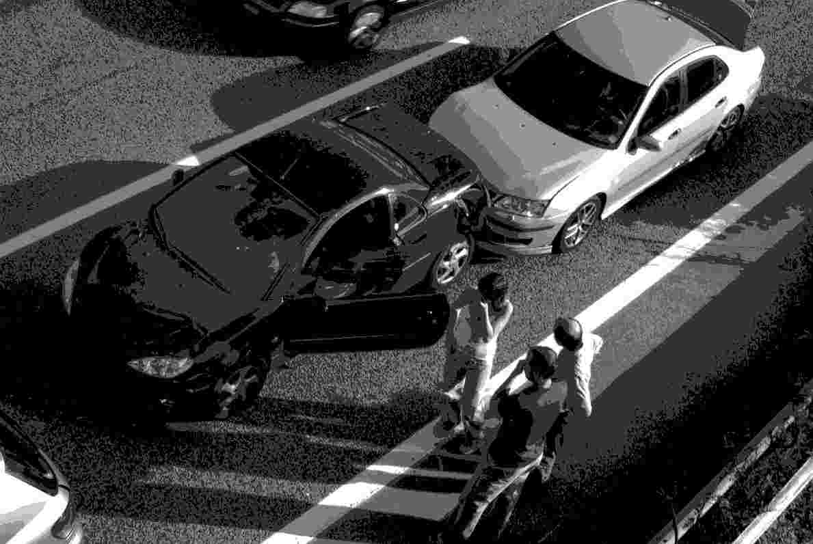

本章将探讨是什么导致了遗忘。我们是否真的会遗忘任何事情？抑或我们只不过是在检索信息时遇到了困难？我们将对这一争论进行探讨。我们还将讨论记忆过程中的其他难题，例如暗示所导致的记忆扭曲和偏差——这曾是过去几十年来许多研究所关注的焦点，尤其是针对目击者证词的研究。我们还会讨论某些记忆运作尤其高效的情形，比如所谓的“闪光灯记忆”，研究者认为在这类情形下记忆会变得尤其鲜明（试想一下对约翰· 肯尼迪遇刺或者威尔士王妃戴安娜之死的记忆吧）。与此相关，我们还将探讨影响记忆运作的情绪事件，例如，当我们感知到可能的威胁或奖赏时，我们通常能更有效地记住信息。
——佚名
——弗里德里希· 尼采
回想一下我们在第一章中介绍的编码、存储和提取这三者之间必要的逻辑区分。遗忘可以定义为存储后信息的丢失。遗忘 也可能并不是存储信息的过程本身出了问题，而是由于我们进行提取时，相似的记忆之间发生混淆、互相干扰。如果我们想要完整地理解记忆是如何运作的，我们就需要试着理解影响遗忘的因素。
关于遗忘，存在着两种传统观点。一种观点认为，记忆只是褪色或者消散了，就像物理环境中，物体经过一段时间后褪色、磨损、失去光泽一样。这种观点将遗忘和记忆视作相对被动的 过程。第二种观点则将遗忘视为更加主动的过程，认为并没有证据表明记忆中的信息是被动消退的，相反，是因为记忆痕迹变得混乱、模糊或彼此重叠，才发生了遗忘。换言之，遗忘的发生是干扰造成的后果。
当前研究文献中，较为统一的意见是：这两种过程都会发生，但通常很难将两者区分开来，因为时间的作用（即记忆的褪色和消散）与其他信息的干扰通常是同时存在的。例如，当你尝试回忆1995年温布尔登网球锦标赛中男子决赛的情况，你的记忆可能不太准确，这既可能是时间流逝所造成的遗忘，也可能是后来的一些比赛对回忆这场比赛产生了干扰，上述两种情形也可能同时发生 。不过，有证据表明，干扰可能是导致遗忘的更为关键的机制。换言之，如果在观看1995年温布尔登男子网球决赛之后，你没有观看过其他任何网球赛，那么你对这场比赛的记忆可能会比此后看过其他网球赛的人更为清晰，因为你对1995年决赛的记忆是更为“独特”的。
一般而言，我们记忆中的不同经历确实会相互作用、彼此交错，因此我们对某段经历的记忆往往会和另一段经历的记忆相互关联。两段经历越相似，对它们的记忆就越有可能相互作用。在某些情况下，这种相互作用可能是有益的，比如新的语义学习可以在旧信息的基础上进行：有证据表明，国际象棋大师能比新手更好地记住棋子的位置，稍后我们会在本章中进一步探讨这一点。但是，当我们需要区分这两段经历并将它们分别呈现时，记忆的相互干扰便会令我们的记忆不再准确。例如，对两场温布尔登网球决赛的记忆可能会相互混淆。
记忆的一个有趣特点是，人们似乎能长时间地、生动地记住某一些事件，尤其是当这些事件非常特殊，或者能引起很多情绪时。这一现象的两个不同方面分别是闪光灯记忆 和回忆高峰 。
1963年，约翰· 肯尼迪遇刺。1997年，戴安娜王妃逝世。2001年，纽约世贸大厦被摧毁。对于亲历过这些事件的人们而言，这些事是非常难忘的。对这类事件的记忆即便历经很长的时间也难以抹去。许多人都记得当初听到这些新闻时自己在什么地方，和什么人在一起。这就是所谓的“闪光灯记忆”。在这种情绪非常激动的情形下，人们的记忆表现通常较好。正如莎士比亚在《亨利五世》中提到阿金库尔战役时所写的那样：“老年人记性不好，可是他即使忘记了一切，也会分外清楚地记得在那一天里他干下的英雄事迹。”
与此不同的是，回忆高峰出现在人们生命的后半途，当他们回想过往经历的时候。在这种情况下，对人生不同阶段的记忆并不平均，人们记得最多的是发生在青春期和成年早期之间的事情。作家、律师约翰· 莫蒂默就很准确地概括了这一点：“在那遥远的过去，我在失明的父亲面前以独角戏形式表演《哈姆雷特》，我跟自己决斗，喝下毒酒……这些情景就像发生在昨天那般清晰。在雾霭迷蒙的记忆中，丢失的反倒是仅仅十年前发生的事情。”专家们认为，回忆高峰的出现是由于人生早期发生的许多事件尤其重要：其中许多事件往往伴随着大量的情感（因此可能也与“闪光灯记忆”有关），比如遇见伴侣、结婚、成为父母亲；还有一些事件则具有另外的重要意义，比如大学毕业、开始工作，或作为背包客环游世界等等。
闪光灯记忆和回忆高峰都是较有争议的研究领域。就闪光灯记忆而言，有学者质疑说，对于戴安娜王妃之死这类事件的记忆，我们需要考察语义记忆究竟在多大程度上干扰了情景记忆。尽管我们感到自己记住了丰富的情景细节，但事实上这些细节可能是事后推断出来的（可参见第二章中关于语义记忆和情景记忆可能的相互作用的简要探讨，以及第一章中关于“自上而下”强加的影响会如何令记忆发生改变的阐述）。尽管如此，这两个课题均在记忆文献中占有相当大的分量。
——中国谚语
20世纪六七十年代，有人针对国际象棋棋手进行了一些研究，看他们能多准确地记住棋盘上棋子的位置。结果显示，国际象棋大师在观察棋盘五秒后就可以记住95%的棋子的位置。实力较弱的棋手能正确定位40%的棋子，而且需要尝试八次才能达到95%的正确率。更深入的研究表明，国际象棋大师之所以表现优秀，是因为他们将整个棋盘视为一个有机的整体，而不是将其视为单个棋子的组合。类似的情形也在桥牌专家回忆桥牌牌局、电路专家被要求记认电路图的研究中得到了验证。在上述这些情况下，专家们都将材料组织成了清楚连贯、具有意义的模式。凭借之前丰富的经验，专家们似乎可以大大提升自己的记忆结果，远超出普通人的表现。

图8 1963年，约翰· 肯尼迪遇刺。1997年，戴安娜王妃逝世。2001年，纽约世贸大厦被摧毁。对于亲历过这些事件的人们而言，这些事是非常难忘的
我们已经在第三章中看到，在提取 的时候对信息加以组织（例如以提示的方式）可以帮助人们回忆。而对象棋高手等专家的研究表明，学习 信息时对信息加以组织，同样也有助于回忆。在实验室里，研究者对比了两种信息获取条件下的记忆表现，前者的记忆材料是相对无结构的，而后者的记忆材料具有一定的结构。例如有两组单词，一组是由随机、混乱的单词组成，而另一组中的单词是分门别类排列好的：蔬菜类，家具类，等等。当人们被要求回忆这些单词组时，他们对分类单词的记忆表现要显著优于他们对随机单词组的表现。因此，在信息获取阶段根据意义对信息加以组织，有时也能提升记忆测试的成绩。不过我们之后便会看到，信息获取时的某些组织方式也可能令后续的记忆结果发生扭曲。

图9 有证据表明，国际象棋大师能比新手更好地记住棋子的位置。这显然是由于大师能够将整个棋盘视为一个有机的整体，而不是将其视为单个棋子的组合
正如我们在第一章中看到的，在20世纪30年代，巴特利特曾要求英国的受试者们阅读并回忆一则印第安人民间故事，“鬼的战争”。这则故事的文化背景与受试者们的文化背景相去甚远。当人们尝试回忆故事时，他们所讲述的东西显然是建立在原先那则故事的基础上，但他们添加、删减、修改了其中的信息，从而生成了一则对他们而言更为合理的故事。巴特利特把这称为“对意义的追求”。
巴特利特提出，我们拥有一些基模 （schemata）；他所说的基模指的是对过往经验加以组织后所得到的意义结构。这些基模帮助我们理解熟悉的情形，引导我们的预期，并为新信息的处理提供了一个框架。例如，我们可能拥有这样的基模：上班或上学时“典型”的一天，或者去餐厅就餐、去影院看电影的“典型”经历应该是怎样的。
如果先前拥有的知识基模难以派上用场，人们就会感到新呈现的信息难以理解。布兰斯福德和约翰逊所进行的一项研究很好地说明了这一点。研究人员提供一段文字让受试者记忆，文字的开头是这样的：
受试者读完这段文字后，即便研究者把文字的标题提供给他们，受试者回忆这段文字时依然觉得困难。布兰斯福德和约翰逊发现，只有在给出文字之前先给出标题（“洗衣服”），之后的记忆表现才能得到改善。事先 提供了标题，文字就变得更加有意义，回忆的准确性便提升了一倍。对这一实验结果的解释是：事先提供标题不但解释了文字的内容，还向受试者暗示了熟悉的基模，帮助他们理解整段文字。因此，提供一个有意义的上下文语境似乎能改善记忆的效果。
不过，即便不能理解也是可以记住的，尤其是在得到协助的情况下——比如通过再认测试来确认所呈现的信息（参见第三章）。阿尔巴和他的同事们证实，虽然提前知道标题能够改善对“洗衣服”这段文字（内容参见前文）的回忆 ，但无论有没有标题，受试者对文中语句的再认 表现都是一致的。阿尔巴及其同事得出了结论：有了标题，受试者便能够将语句整合为一个连贯的整体，从而有助于回忆，但这只会影响语句间的意义关联，并不影响语句本身的编码。这就是为什么在没有标题的情况下，受试者对文字材料的再认表现也没有变差。
借“洗衣服”这段文字所进行的研究说明，我们已有的知识能帮助我们记住新的信息。鲍尔、温岑斯及其同事则提供了另一个例证。他们要求受试者记住几组词语，这些词语或是毫无规律的随机组合，或是有层次、有规律地排列而成。这些研究者发现，如果将单词以有意义的方式排列起来，记住这些单词所需要的时间仅为单词无规律排列时的四分之一。词语的排列层次显然强调了词义之间的差异，这不但能帮助受试者更方便地记住这些单词，也为之后的回忆提供了一个框架。因此，对记忆材料进行组织、整理，能够同时 提升对这些材料的学习效果和回忆表现。
正如第三章中所提到的，任何领域的专家学习其专业内的信息，都比新手更轻松、更迅速，这表明我们所学习的内容似乎有赖于我们已有的知识。例如，莫里斯及其同事证明，受试者所拥有的足球知识的多少，与他们听过一遍后即能记住的足球比分的数量之间有很强的相关性。研究者将一些新的足球比分报给受试者，就像周末的足球比分广播一样。一组比分是真正的足球比分，而另一组则是模拟得分：通过合理地模拟比赛双方，按照与前一周相同的进球频率计算所得的比分。在实验中，受试者会被告知他们听到的哪些得分是真实的，哪些是模拟的。似乎只有真实的比分才能激发足球专家的知识和兴趣。对于真实的比分而言，记忆结果显然与足球专业知识有关——拥有更多足球知识的球迷能回忆出更多的比分。但是对于模拟的比分（这些比分其实非常合理，但不是真实的分数）而言，受试者有没有专业知识对于之后的回忆表现并没有太大的影响。这样的结果表明，记忆容量与现有知识（恐怕还有兴趣和动机）在相互作用，从而决定了哪些信息能被有效地记住。
我们已有的知识是非常重要的财富，但它也可能导致一些错误。在一次相关研究中，欧文斯和同事们向受试者描述了由某个角色所进行的活动。例如，其中有一段描述是关于一个名叫南希的学生，以下是这段描述的第一部分：
有一半的受试者被提前告知，南希担心自己怀孕了。这些受试者在之后的回忆测试中，给出的错误信息是其他受试者的二到四倍之多。例如他们中有些人回忆道，南希接受的“例行检查”中包含妊娠测试。这类错误在再认和回忆测试中都有出现。这反映了一个事实：人们对于生活中常见的活动（看病、听讲座、去餐厅就餐等等）有自己的预期，而这些预期提供的基模能促进或误导我们的记忆。
在“洗衣服”研究的另一部分中，鲍尔和同事研究了基模对于回忆的影响。他们给受试者提供了一些基于正常预期的故事，但故事中包含一些与正常情况差别很大的内容。比如说，一个关于在餐馆吃饭的故事可能提到了在餐前付账。在回忆这些故事时，受试者倾向于按照基模的（也就是更典型的）结构来调整这个故事。受试者常见的记忆错误还包括，添加一些在典型场景下通常会出现但在故事中并未提及的内容，例如在选择菜品前先阅读菜单。
总之，以上这些实验以及类似的研究均表明，人们倾向于记住与他们脑海中的基模相符的信息，并过滤掉那些不一致的信息。
正如第一章中提到的，即使我们认为自己在脑海里准确“回放”了之前的事件或信息，像放录像带一样，但实际上，我们是用一个个的碎片构建起了记忆，我们已有的知识和观念也参与进来，告诉我们应当如何将那些碎片加以组合。
这一策略的适应性通常很强。如果新事物和我们已经知道的事物之间的相似度很高，我们就倾向于不记住这些新信息。但是有时候，实际发生的内容与推理想象出来的内容之间，界限可能会较为模糊。
现实监控指的是区分出哪些记忆是有关真实事件的，哪些又是来自梦境或其他的想象来源。玛西亚· 约翰逊及其同事在几年时间内对此进行了系统研究。约翰逊提出，不同的记忆在性质上存在差异，这对于区分外来的记忆 和内部生成的记忆 十分重要。她认为外部记忆具有以下属性：1） 具有更强的感官性质；2） 更为具体、复杂；3） 发生在某种具体可信的时间、地点情境下。与此相对，约翰逊认为，内部生成的记忆则更多地包含推理及想象过程的痕迹，这些痕迹都是在生成内部记忆的过程中留下的。
约翰逊找到了支持这些差别的论据，但如果我们使用他所提出的这些差别作为判定标准，我们就会把一些不真实的记忆视为是真实的。例如，在20世纪90年代有一项研究，要求受试者回忆一盒录像带中的细节，并同时汇报他们对自己的记忆有多自信，告诉研究者他们心中是否有清晰的心理图像和细节。研究者发现，受试者心中清晰的影像和细节越多，他们的回忆也就越准确。但是，由于记忆材料是可以亲眼看到的影像，人们有些过于自信了：当受试者给出伴随有心理图像的错误细节时，倒比给出不带心理图像的正确细节时更有信心。这些发现似乎意味着，并不存在完全可靠的方法来区分“真实”和“假想”的记忆。
和现实监控这一概念相关的是源监控 ，即成功地确定记忆的来源，例如，能说出我们是从一个朋友那里而不是收音机里听到的某则信息。下面我们将会看到，错误地确认记忆来源可能带来严重的后果，例如目击者的证词便是如此（参见米切尔和约翰逊于2000年发表的论文）。
我们甚至都不能很好地记住日常环境中的情况。例如，在第一章中我们看到，要正确地回忆出口袋里某个硬币上的头像是朝左还是朝右，这么简单的事情做起来也相当有挑战性。通常而言，人们都不知道这个问题的答案，即便他们几乎每天都使用这种硬币。有些人可能会争辩说，当我们看到不同寻常的 事件，例如犯罪事件，我们就能更有效地记住这些事件了，这比尝试记住一枚硬币上的平凡细节要容易得多。毕竟，在日常生活中，我们并不需要知道头像的朝向就能有效地使用硬币。
但是我们知道，在犯罪现场，有很多因素会对目击证人造成负面影响，从而模糊或扭曲他们的记忆：
另一个会造成记忆扭曲的强大因素是诱导性问题。“你有没有看见这个男人强暴了 那个女人？”这个问题就属于诱导性问题。比起“你有没有看见一个男人强暴了 那个女人？”，前一个问题更有可能让证人指认相关罪行。因此，假设你在某交通枢纽处目睹了一场事故，之后警察问你，车是停在树的前面还是后面。被问及这样的问题，你便很有可能将树“添加”到记忆场景中去，即使现场根本就没有树。一旦树被添加进去，它就会成为记忆的一部分，我们很难再区分真实的记忆和之后经过增添的记忆。
唐纳德· 汤普森一直非常积极地主张目击者的证词并不可靠——我们马上就会看到，这一点是多么具有讽刺意味——他曾亲历过一次非常典型的记忆偏差事件。有一次，汤普森参加了一个关于目击者证词的电视辩论。过了一段时间后，警察逮捕了他，但拒绝解释原因。直到在警察局里一位女士将他从一排人中指认了出来，他才知道自己就要被控强奸罪了。询问了更多细节后，他发现，很显然强奸案发生的时候他正在参加那次电视辩论。他有很好的不在场证据，而且有许多证人，甚至包括和他一同参加辩论的一名警官。巧的是，那名女士被强奸时，房间里就在播放着这场电视辩论。这是一个源检测的问题，称为“来源遗忘”（丹尼尔· 沙克特在其著作《记忆的七宗罪》中将这称为错误归因 ）。由此看来，那位女士对强奸者的记忆被同一时间从电视上看到的面孔扭曲了。（而那个电视节目所讨论的话题正好也非常相关。）那位女士认出了汤普森的面容，但是认知的来源却归纳错了。
再来看看另一个相关的话题：有些研究表明，在一些情况下，当两个人互换了位置，旁人无法察觉他们究竟是什么时候换了位置的。这种现象称为“变化盲视”。人们显然对于周围环境中发生的改变并不太敏锐。综合考虑目击者证词可能出现的问题，变化盲视现象也说明了我们是多么容易对周围环境中的信息进行不准确的加工。
新添加的信息会如何扭曲旧有的记忆，这是一个重要的研究课题，无论研究者们是关心目击者证词的现实意义，还是关注记忆本质的理论意义。尽管我们知道记忆的不可靠性，法律工作者、警察和媒体仍然赋予了目击者证词相当重要的地位。但是正如我们在前一节中所看到的，鉴于我们通过精确的科学实验所了解到的记忆运作方式，目击者可能会提供并不属实的“信息”。目击者对犯罪情景的描述还可能取决于他们投入的情感及个人观点，例如他们是更同情罪犯还是更同情受害者。
伊丽莎白· 洛夫特斯和同事们对误导信息效应 进行了深入探索。具体来说，洛夫特斯及其同事反复证明了，在进行干预、误导性质疑或提供错误信息后，受试者的记忆会发生扭曲。即便误导信息间接地出现，这样的问题仍然会出现。例如，洛夫特斯及其同事向受试者展示了一组关于道路交通事故的幻灯片。之后，研究者向受试者询问那个事件。研究者对其中一半的受试者提问时，对其中一个问题进行了修改：将其中的“避让”交通标识换成了“停止”标识。接受了误导信息的受试者在之后的记忆测试中，更有可能确认错误的信息。这些受试者倾向于选择在误导问题中提及的路标，而不是他们自己亲眼所见的路标。这是强有力的研究发现，提示我们思考究竟如何提问才能让目击者的回忆尽可能准确。不过，误导信息效应的基础原因仍然存在争议。那些对洛夫特斯的观点存疑的人认为，受试者最初的记忆确实有可能由于那样的提问而发生永久地扭曲，但同时也存在这样的可能性：那些提问提供了受试者本来无法记住的真实信息，从而对受试者的记忆起到了补充作用。稍后我们会就这一点在本章作进一步探讨。
总体而言，这些研究结果的要旨在于，（我们要再次强调）记忆不应被视作一个被动的过程。正如我们在第一章中看到的，记忆是一个“自上而下”的系统，受到我们的心理定势（mental set）的影响，被种种偏见、刻板印象、信仰、态度和思想所左右；记忆同时还是一个“自下而上”的系统，受到感官输入的影响。换言之，记忆并非仅仅由源于我们物理环境的感官信息所驱动，人们被动地接收这些信息并将其存放在记忆库里；相反，根据我们过往知识和偏见的影响，我们为接收到的信息强行赋予了意义，从而改写了我们的记忆，使其更符合我们对世界的看法。
和误导信息效应相关，但是可能带来更为严重后果的是恢复记忆和虚假记忆。通过治疗，一些成年人“恢复”了对童年时期被虐待经历的记忆，从而导致刑事定罪。但在这些情况下，人们是真的“恢复”了对于发生在他们童年时期真实事件的回忆，还是被诱导记住并没有真正发生的事情？大量研究已经表明，在一定情况下，可以创建出虚假的记忆。有些时候这些虚假记忆是有益的——例如，罗迪格、麦克德莫特及其同事从20世纪90年代开始进行了大量的研究，研究表明，人们可以通过激发“记住”某个语义上和先前呈现的词语相关的词语，而该单词却在之前没有出现过（例如，人们可能会记得曾经看到过单词“夜晚”，当他们之前看到了一系列和“夜晚”语义相关的词语，例如“黑暗”“月亮”“黑色”“静止”“白天”……）。
但并非那么有益的是，通过使用暗示或者误导的信息，可以创造出关于“一些事件”的回忆，从而让人们强烈地认为这些事件曾经在过去发生过，但事实上这些记忆是虚假的。所以至少有可能的是，人们所“记得”的受虐待的经历其实是虚假记忆。

图10 我们对车祸这类事件的记忆会受到提问的影响，信息可以被“添加”进我们的记忆。这种现象被称为误导信息效应，对于我们思考目击者证词的有效性有着深远意义
伊丽莎白· 洛夫特斯在实验中发现，人们回答误导性问题时几乎和他们回答无偏见问题时同样地迅速和自信。在这种情况下，即便受试者注意到有新的信息被添加进来，这仍然会成为他们对事件“记忆”的一部分。因此，回顾过程也可能引起记忆偏差，即便我们可以清楚地意识到这种偏差。在某一次实验中，洛夫特斯和帕尔默要求一些学生观看一系列影片，每则影片显示一起交通事故。之后这些学生需要回答关于这些事故的问题。其中一个问题是：“当两辆车互相____时，车开得有多快？”每组学生看到的问题中，空格处的词语都不同，可能是以下词语中的任何一个：“猛撞”“撞击”“撞上”“碰撞”或者“擦碰”。研究者发现，学生对于车速的估计会受到问题中所选动词的影响。洛夫特斯和帕尔默得出结论，学生们对于事故的记忆被问题中暗示的信息改写了。
洛夫特斯和帕尔默继续对这一问题进行研究，他们要求学生们看一段关于多起交通事故的影片。学生们又再次被问及车速，其中一组学生的问题中使用“撞碎”（暗示更快的速度），另一组问题中使用“碰撞”。第三组学生并没有被问及这个问题。一周以后，学生们被要求回答更多的问题，其中一个是：“你在事故现场有没有看到破碎的玻璃？”
洛夫特斯和帕尔默发现，问题中的动词不仅影响了学生对车速的判断，还影响了一周后他们对关于玻璃的问题的回答。那些估计出更高车速的学生更有可能记得在事故现场看见过破碎的玻璃，尽管影片中其实根本没有破碎的玻璃。那些之前没有被问及车速问题的学生们中，当一周后被问及玻璃，极少有人回答看到过破碎的玻璃。
在另一项研究中，洛夫特斯又让受试者观看了一个交通事故影片。这次，她问其中的一些受试者：“白色跑车在乡间道路行进时，它以怎样的车速经过谷仓？”事实上，影片中并没有谷仓。一周后，那些被问过这一问题的受试者更有可能说他们记得在影片中看到过一个谷仓。即便在受试者看过影片后立即问他们：“你看到一个谷仓了吗？”他们也更有可能在一周后“记得”看见过谷仓。
洛夫特斯从这些实验中得出结论：后续引入的误导信息可以改写对事件的记忆。有些研究者认为，这些受试者只不过是说出了研究者期望他们回答的答案，就好像小孩子会按照大人期待的方式回答问题，而不会说他们不知道。洛夫特斯又接着找到了更多的证据支持其结论。
他们又让受试者看了一起交通事故，但这次是通过一系列幻灯片。事故显示，一辆红色的日产车在一个十字路口转弯，撞到了一个行人。但是其中一组受试者看见车起先停在“停车”标志那里，而另一组受试者看见车停在“避让”标志那里。这一次，关键问题是：“当另一辆车经过日产车时，日产车是停在停车标志那里吗？”或者“当另一辆车经过日产车时，日产车是停在避让标志那里吗？”每组中有一半的受试者听到的问题中使用的是“停车”，另一半受试者听到的问题中使用的是“避让”。每组中有一半的受试者收到的信息与他们在事故幻灯片中看到的一致，另一半受试者则接收了误导的信息。
20分钟后，所有受试者都要观看两套不同的幻灯片，其中一套是他们之前实际看到的，另一套作了一些调整，受试者必须在两套中选择更准确的一组。其中的一组幻灯片显示车停在“停车”标志处，而另一组幻灯片显示车停在“避让”标志处。研究者发现，如果学生被问到的问题和他们之前所看到的幻灯片一致，他们更有可能在20分钟后作选择时选出正确的幻灯片。而如果之前被问到的问题具有误导性，20分钟后，当他们被要求选择最准确的幻灯片时，学生们更有可能选择错误的那套幻灯片。虽然这个实验有些难以评估，但实验结果仍然说明，有些人是通过事后提供的关于“停车”或“避让”标志的信息而记起 的，而并非只是在给出研究者所期望的答案，像洛夫特斯的一些反对者所说的那样——现在每个受试者都有两个同样合理的选项了。
对于警官、律师、法官及其他法律工作者所采用的审问技巧，这一类发现的意义十分重大。与此相反，另一些研究发现，在一些情况下，后续的相关信息本应该被整合进记忆的，却没有 能恰当地整合进来。这方面的补充研究表明，虽然人们可能记得自己对之前错误的信息进行了修正，但他们却可能继续依赖那些不可信的信息——莱万多夫斯基及其同事便在实验室中观察到了这一点。至于现实世界中有关这一现象的例子，只要想想以下情况：2003年美国入侵伊拉克，此后大约一年，在一次美国国内调查中，30%的受访者依然认为在伊拉克发现了大规模杀伤性武器。2003年5月布什总统宣布对伊战争结束，几个月后的调查中，20%的美国人认为伊拉克在战场上使用了生化武器。可见，在一些情况下，记忆似乎会继续保留错误信息，这一现象具有深刻的社会意义。
洛夫特斯及其同事确认了记忆的回溯性偏差，而莱万多夫斯基及其同事则发现正确的后续信息可能无法恰当地整合进现有的记忆。进一步探究什么样的环境条件会导致上述这两种记忆偏差，这是未来研究的重要挑战之一。
丹尼尔· 沙克特在他的著作中提出，记忆故障可以被细分为七种基本的失误或“罪过”：
分心： 记忆与注意之间的交界处出现了故障。并非我们随着时间流逝而遗忘了信息，而是一开始就没有存储这些信息，或者当我们需要这些信息时却没有进行检索，因为我们的注意力集中在别处。
短暂性： 随着时间流逝，记忆衰退或消失了。我们虽然能记住今天做了什么，但几个月后我们很有可能由于记忆的消退而忘却。
空白： 我们拼命回忆某些信息，记忆的检索却凝滞了。“话到嘴边却说不出来”就是这类故障的一个例子。
错认： 搞错了记忆的来源。你可能从电视上看到某条信息，之后错误地认为这条信息是同事告诉你的。
暗示： 由于引导性问题、评论或提示而植入的记忆。在法庭语境下，暗示和错认现象都会带来严重的后果。
偏颇： 当前的知识和信念对过往记忆的强大影响。为了遵循我们现在的观点，或是为了保持自己的正面形象，我们会无意识地歪曲过往的经历或信息。
纠缠： 某些我们宁愿忘却的恼人信息或事件，却时不时地出现在我们脑海中。这可能包括工作上的尴尬失误，或者严重的创伤性经历（例如在创伤后应激障碍中，我们往往持续不断地回忆起创伤经历）。